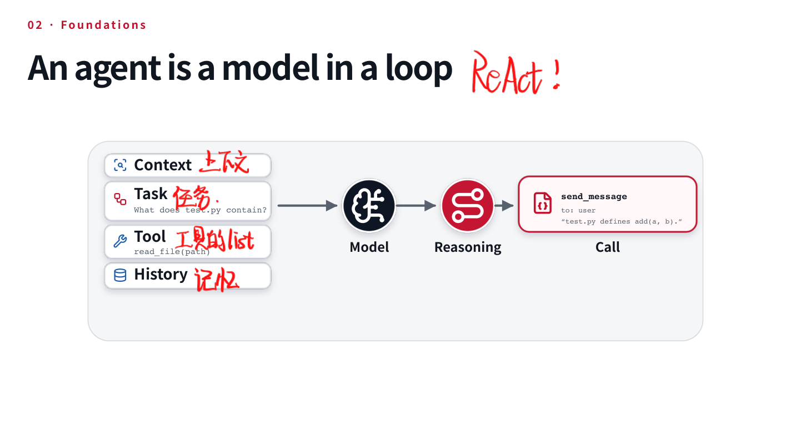
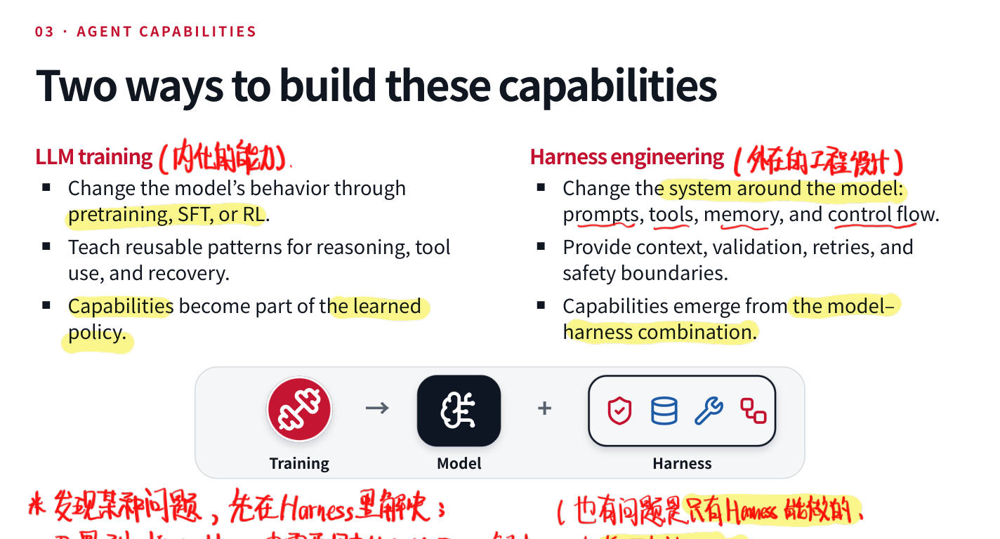
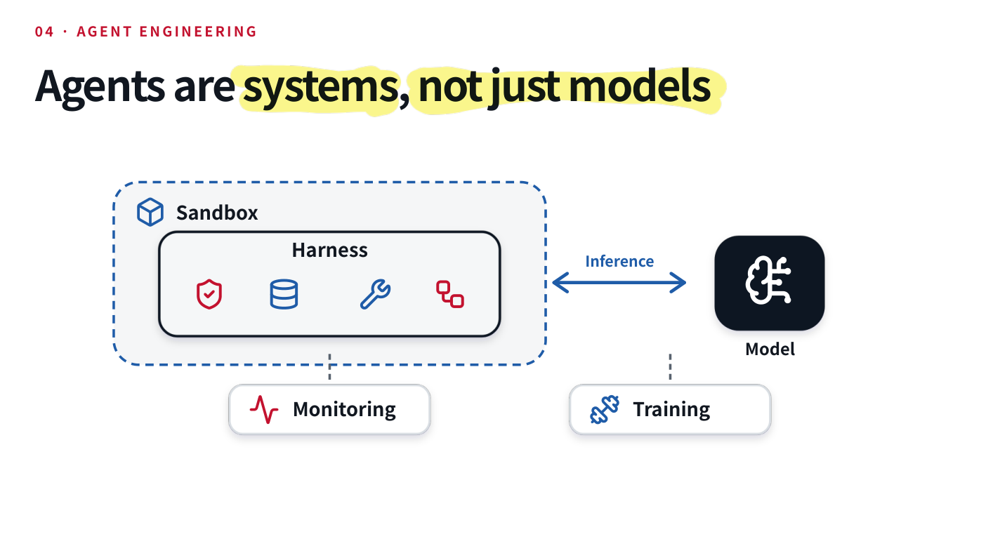

平时用 Coding Agent 已经很顺手了，但如果让我解释它究竟比一个普通的 Chat Model 多了什么，似乎又很容易说成「能调用工具的大模型」。这话当然没错，只是和用「能转的轮子」解释汽车差不多，最值得研究的部分全省掉了）因此还是从头学一遍 CMU 的 AI Agents，顺便把一些平时用得多、却没认真想过的东西补起来。
1.1 Agent 与环境
Agent 的定义其实很古早：感知环境，并通过动作影响环境的系统。 这个定义和强化学习是一脉相承的，重点在于交互。对于语言模型 Agent，我们可以把几个要素对应起来：
| 要素 | 在 LLM Agent 中的含义 |
|---|---|
| Environment | 代码仓库、网站、桌面应用，或者一套业务流程 |
| Observation | 文件内容、网页、截图、消息和工具返回值 |
| Action | 回复用户、编辑文件、执行命令、调用 API、操作鼠标键盘 |
| Reward / Feedback | 测试是否通过、任务评分、用户是否满意等 |
这里需要区分 环境的真实状态 与 模型看到的观察。仓库里确实有什么文件，是环境状态；模型读了其中三个文件后得到的内容，才是它的 observation。它并没有天然获得整个仓库的上帝视角。Computer Use 更明显：屏幕截图只是当前时刻的一部分信息，页面背后的状态还得靠操作去发现。
Reward 也不意味着每个 Agent 在线工作时都在做 RL。测试结果可以只作为下一步推理的反馈；只有拿它构造训练目标并更新参数时，才进入训练的问题。否则正常用一下 Agent 就要给模型反传一遍，也太热闹了。
能力与可靠性也得分开看。一边有 16 个 Agent 协作两周、构建约十万行 C 编译器并用于编译 Linux 内核的展示，另一边也有邮件清理任务违反用户确认要求、连续把邮件移入垃圾箱的失败案例。前者说明复杂任务的能力，后者暴露授权和停止机制的问题。所以说Agent是把双刃剑。
1.2 语言模型如何产生一个动作？
语言模型的基本工作仍然是 next-token prediction：根据已有前缀预测下一个 token，再把生成结果接回前缀。CoT 也是一样，先生成一些中间推理，让后续预测可以读到这些内容。
工具调用没有改变这一点。我们先给模型一个工具定义，例如：
{
"name": "read_file",
"description": "Read a UTF-8 file.",
"parameters": {
"type": "object",
"properties": {"path": {"type": "string"}},
"required": ["path"]
}
}
名称说明调用对象，description 帮助判断什么时候用，JSON Schema 约定参数结构。API 里的这些对象会经由 apply_chat_template 等步骤，被渲染成模型实际接受的序列。模型看到的最终还是 token，而不是 Python 进程里那个活生生的函数。接下来它可能生成：
<tool_call>
{"name":"read_file","arguments":{"path":"test.py"}}
</tool_call>
外部程序解析这段输出，找到对应函数，校验参数并执行，最后再把文件内容包装成工具消息送回来。工具结果应与调用 ID 对应；下一轮模型读到 observation，才继续解释文件内容，或处理「文件不存在」这样的错误。
因此，工具调用在模型内部是文本生成，在系统外部才变成执行。 模型说自己读过文件，和文件确实被读取，是两回事。这也是为什么在实际 debug 的时候，光看 Agent 的最终回答还不够，还得看完整轨迹，check 中间他的工具调用有没有问题，以及实际拿到了什么结果。
1.3 Harness，以及那个并不复杂的循环
承接模型与外部执行的运行系统叫 Harness。把模型理解为 engine 的话，Harness 就是让这个 engine 能在特定环境里工作的一套装置：消息管理、工具注册、执行分发、权限控制、错误恢复、终止条件等，都要有人处理。
最小的 Agent Loop 反而很好理解：
messages = [system_message, user_task]
for step in range(max_steps):
reply = model.generate(messages, tools=tool_definitions)
messages.append(reply)
if reply.is_final:
break
for call in reply.tool_calls:
try:
result = execute_checked(call)
except ToolError as error:
result = {"error": str(error)}
messages.append(tool_message(call.id, result))
真实协议里的终止方式、并行调用、预算与异常处理肯定比这个会复杂一些，但最核心的步骤就是 query → execute → observation → query。mini-swe-agent 把这个循环写得很直接，值得对着实现看一遍：首先，初始化 system / user 消息，然后不断 step()；step() 里面先查询模型，再执行动作、追加结果。原来 Agent 的神秘感有一半来自我们没打开源码）
ReAct 所强调的 reasoning 与 acting 交替进行，也可以放到这个循环里理解。模型不必一次把所有步骤猜完，而是采取动作、获取新信息，再决定下一步。History 则把此前的决策与观察带进当前上下文。

实际检查轨迹时，可以沿 system 指令、用户 issue、assistant 动作、tool 返回与错误逐步读下去。比如仓库 issue 指出某个参数没有生效，模型接下来究竟复现了问题，还是直接猜了一处修改，这些都藏在中间轨迹里。把它展开以后，所谓「Agent 修好了」就变成了一串可以检查的决定。
1.4 Agent 需要哪些能力？
「会调用工具」只是起点。一个能持续工作的 Agent，至少涉及六类能力：
| 能力 | Harness 可以怎样补 | 训练可以怎样补 |
|---|---|---|
| 准确调用工具 | 约束解码、参数校验、清晰接口 | 学习工具调用轨迹 |
| 长上下文一致性 | 压缩历史、检索记忆、委派子任务 | 长上下文与长轨迹训练 |
| 个性化与可定制性 | 用户记忆、Skills、自定义工具 | 从用户反馈中调整行为 |
| 复杂任务管理 | 规划工具、任务分解、子 Agent | 在长任务中训练决策与恢复 |
| 环境理解 | 领域技能、合适的观察接口 | 学习特定观察形式，在对应环境中训练 |
| 安全性 | 沙盒、凭证隔离、轨迹监控 | 学习安全约束下的行为 |
我自己还想把 Intention Understanding 放得更靠前一些。用户一句「帮我整理一下」可能包含很多没明说的期待：改文件还是只给建议？只是分类，还是允许删除？模型对用户意图理解错了，后面工具调用再准确也只是在高效地做错事。这个问题与指令理解、权限边界和任务成功判定都有关系。
1.5 改模型，还是改 Harness？
这感觉是 lecture 最有意思的部分，宏观地讲了提高 agent 能力的两条路线：一条是改变模型参数，把行为学进 policy；另一条是改变它周围的系统，让它在更好的信息与控制流程下工作。
训练大致经过预训练、继续预训练 / mid-training、SFT、RL 等阶段。预训练提供语言、代码和世界知识；mid-training 可以继续补领域分布、长序列和相关数据，SFT 则直接学习指令及轨迹中的示范行为；RL 根据结果或偏好调整策略。mid-training 与 SFT 不是同一个目标函数，虽然在整个 pipeline 中都承担了「从通用基模走向 Agent」的过渡作用。
Harness engineering 则通过 prompts、tools、memory 和 control flow 来提供能力。比如长任务记不住约束，可以先把约束保存在可靠的任务状态里；工具格式偶尔错，可以先校验、约束解码或反馈错误。没必要每遇到个问题就 train 一发，训练成本不会因为你很急就消失，有时候改个 harness 就能解决很多事。

但反过来，有些行为也不能靠外部流程彻底补上。模型如果一直看不懂某类界面，或者无法根据观察选择正确动作，再精美的工具描述也有上限。我的理解是：先判断问题落在哪一层，再决定改哪一层。 Harness 可以帮助暴露模型能力，也可以掩盖模型弱点，评估时尤其要把两者一起考虑。
1.6 一个 Agent 系统还有什么？
只看模型和循环，还是少了实际运行中很重要的几块。

Sandbox 负责隔离执行，限制文件、网络与计算资源，也提供可复现环境。跑 SWE-bench 一类任务时，仓库版本、依赖、测试命令都要固定；否则一次通过、一次失败，究竟是模型变化还是环境变化都说不清。Docker、Apptainer 或托管执行环境，都在处理这层问题。
Inference serving 负责可靠地生成：请求调度、batching、流式输出、并行与 KV Cache 复用。Agent 的上下文会反复增长，推理服务效率直接影响它能不能承担长任务。vLLM、SGLang 是这一层的典型系统；它们和 Agent 的任务规划不是同一层工作，但最终延迟会一起算到用户头上。
Training system 负责数据准备、rollout 收集、分布式 worker、奖励计算、参数更新、checkpoint 和评估。SkyRL、Miles 等框架把这些工作组织起来。训练 Agent 难的也不只是 loss 怎么写，还包括许多环境如何同时跑、失败任务如何回收、数据如何保持可追踪。
1.7 从「做出来」走到「说清楚」
这门课还要你自己实现 Harness，再设计多步任务的 evaluation，最后训练并分析行为变化。能演示成功当然很好，但 demo 往往只展示最顺利的一条轨迹；真正的证据还要看失败模式、成本、稳定性与权限约束。比如诊断线上故障、发营销邮件、提交报税和调整用药，即便都能写成一串工具调用，允许自主执行的程度也完全不同。模型具备能力，只回答了「做不做得到」；系统还要回答「当前是否被授权、结果如何确认、出了错怎样恢复」。
目前先记住最基本的一点：Agent 是模型与环境持续交互的系统。后面学习 Tools、Context、Memory 和 Planning 时，我更关心的是它们分别改变了这个循环的哪一部分，以及最后怎样证明真的变好了。这篇博客以及后续博客其实是ai看我的笔记之后写的，感觉有点唐氏，但是意思就是这些个意思）我也会看一遍，把一些突兀的部分修一修，给大家一个流畅的观看体验。